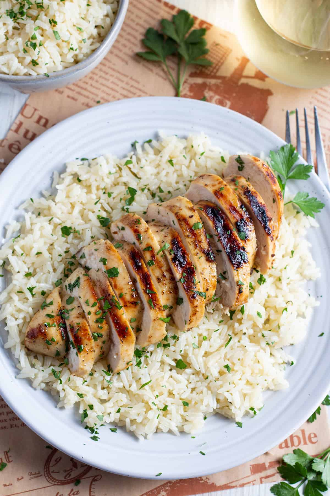
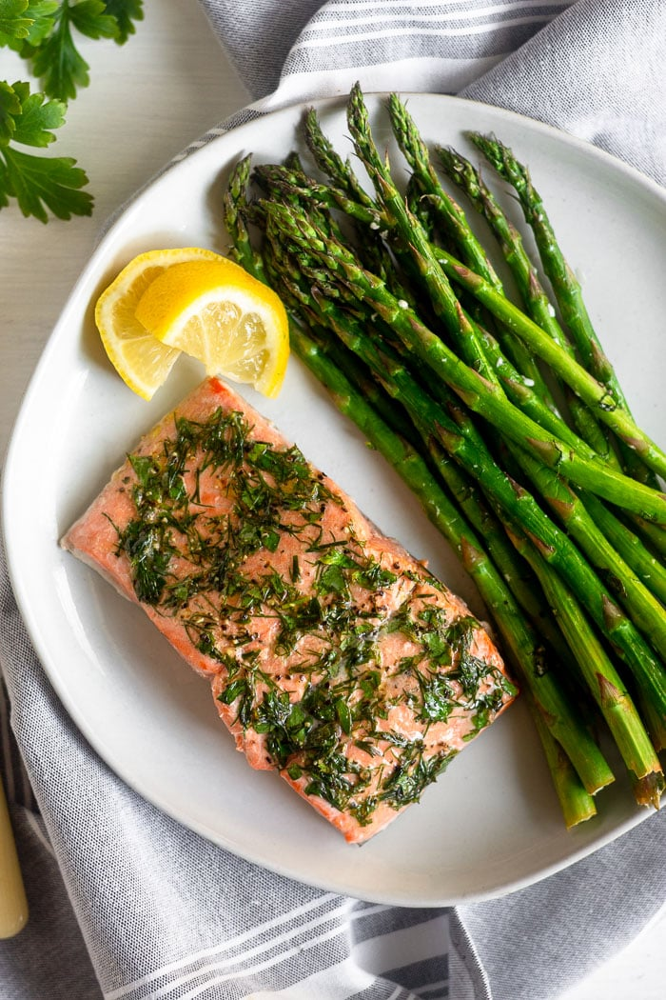
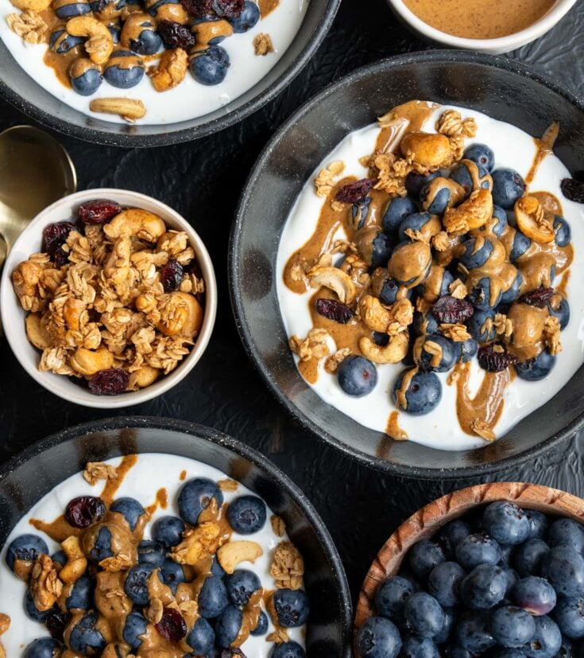

Healthy Meals for a Low Calorie Diet
Listed below are some delicious and nutritious meal options that are perfect for those looking to maintain a low-calorie diet without sacrificing flavor or satisfaction.
Meal 1: Grilled Chicken and White Rice Bowl
High in protein and low in calories, this meal is perfect for a balanced diet.
- Estimated Time: 20 minutes
- Protein: 30g
- Calories: ~250

Meal 2: Baked Salmon with Vegetables
High in omega-3 fatty acids and low in calories, this meal is an excellent source of fiber and vitamins.
- Estimated Time: 25 minutes
- Protein: 25g
- Calories: ~200

Meal 3: Greek Yogurt Bowl with Berries
High in protein and fiber, this meal is perfect for a light and nutritious option. Customize it with your favorite fruits and nuts.
- Estimated Time: 15 minutes
- Protein: 20g
- Calories: ~150

Tips for a Low-Calorie Diet
Here are some tips to help you maintain a low-calorie diet while still enjoying delicious and satisfying meals:
- Determine your daily calorie needs based on your age, gender, and activity level. Websites such as Calorie Calculator
- Choose lean proteins like chicken, fish, and ground beef or turkey.
- Include plenty of vegetables in your meals to add volume and nutrients without adding many calories.
- Fiber is important for digestive health and can help you feel full longer.
- Track your food intake using apps like MyFitnessPal to stay within your calorie goals and monitor your nutrient intake.